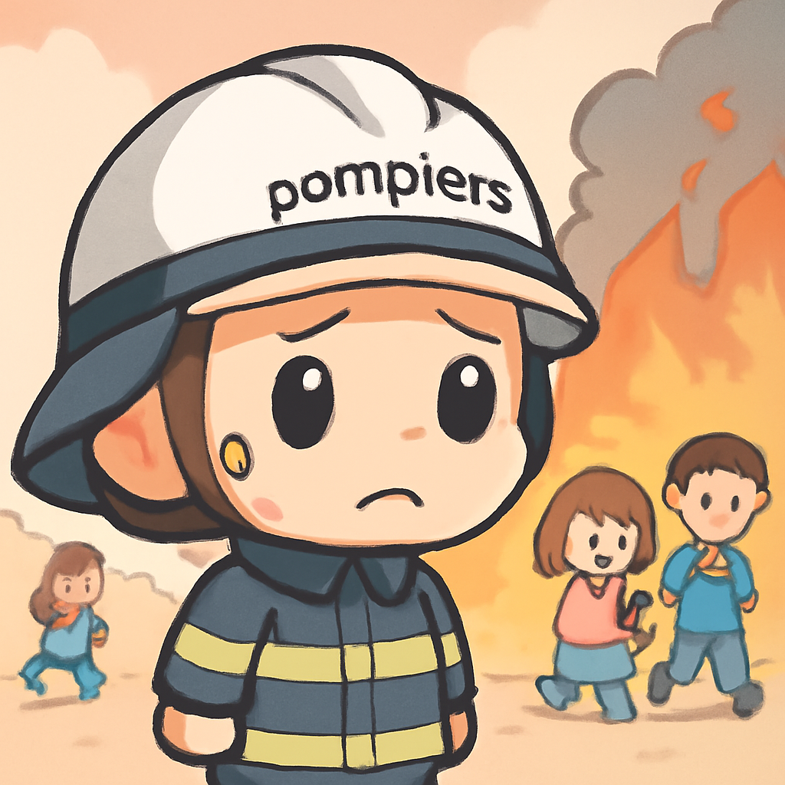
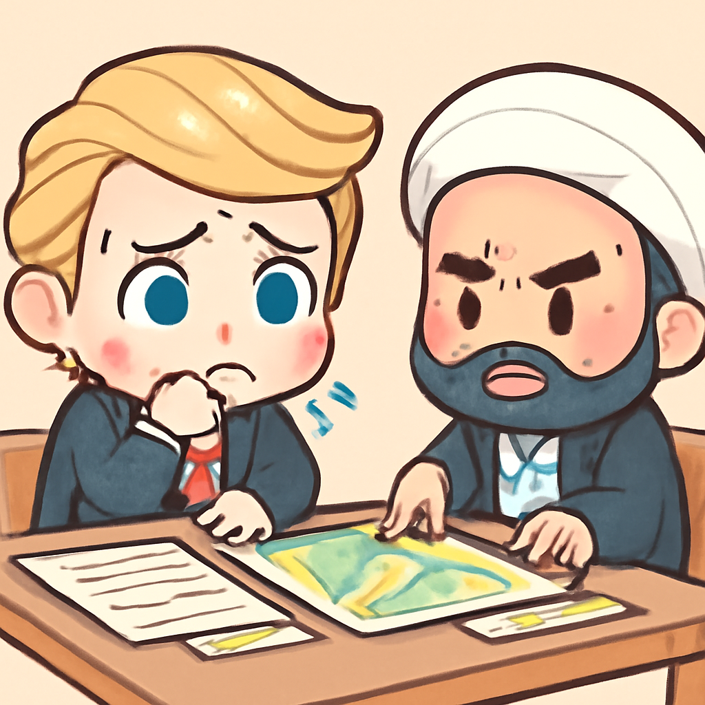
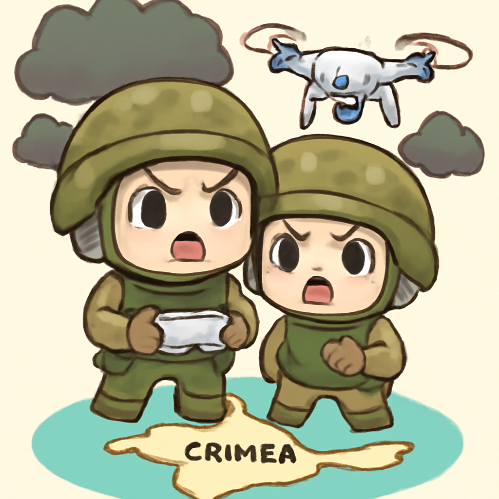
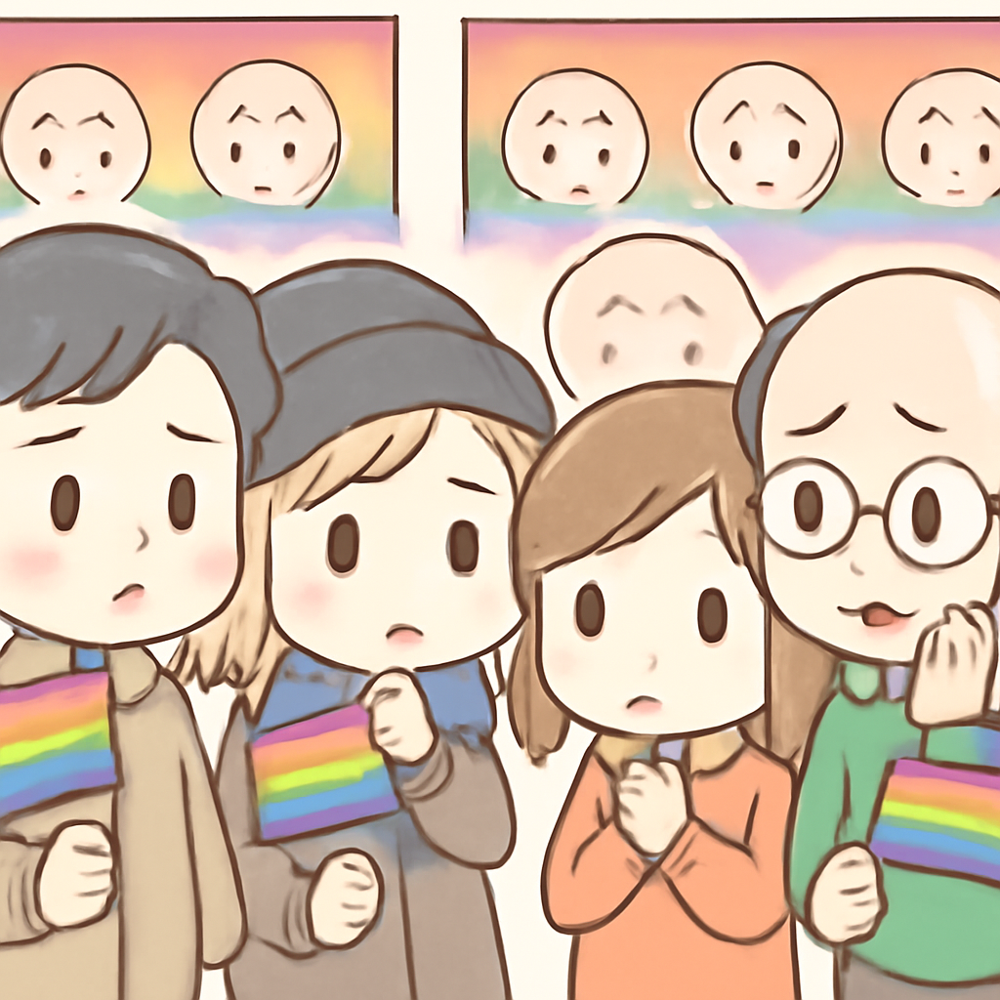
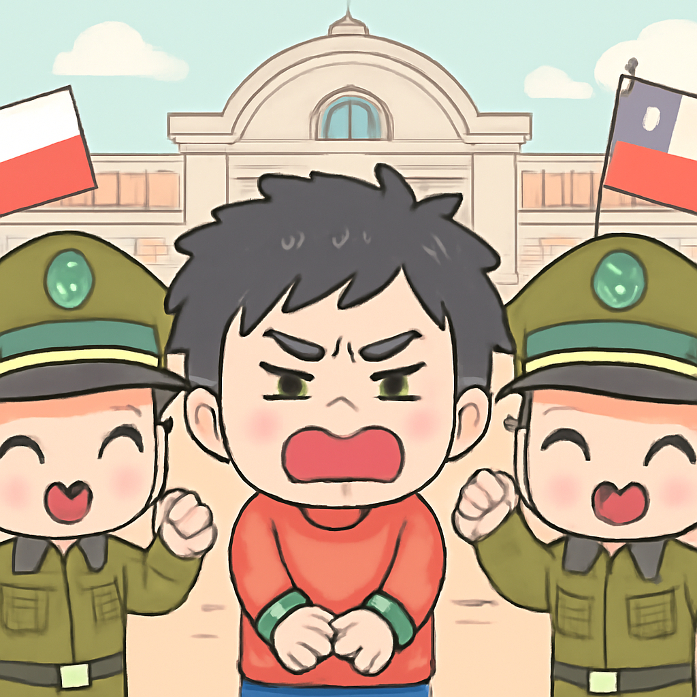

其一 · 法國波爾多 · 野火威脅鄰近城市
法國波爾多附近的野火迫使居民撤離。

目前在法國波爾多附近，野火距離城市僅九英里，市長警告可能需要進一步撤離。這場野火已迫使超過30萬人撤離，讓當地居民和遊客都心驚膽戰。隨著全球氣候變遷，這樣的自然災害似乎成為了常態，大家都在想：是不是該多買幾瓶水呢？
🔗 原始新聞 ↗
2026-07-28 · 以古觀今，以笑抗愁
法國波爾多附近的野火迫使居民撤離。

目前在法國波爾多附近，野火距離城市僅九英里，市長警告可能需要進一步撤離。這場野火已迫使超過30萬人撤離，讓當地居民和遊客都心驚膽戰。隨著全球氣候變遷，這樣的自然災害似乎成為了常態，大家都在想：是不是該多買幾瓶水呢？
🔗 原始新聞 ↗
美國總統特朗普暗示與伊朗戰爭有進展。

在中東，特朗普表示美國正在與伊朗進行戰爭談判，儘管伊朗否認這一說法。這表明兩國之間的緊張局勢可能出現變化，讓不少國際觀察者都在猜測：到底會不會有和平的曙光？隨著局勢發展，大家的心情可說是五味雜陳。
🔗 原始新聞 ↗
烏克蘭對克里米亞的攻擊造成當地停電及缺水。

烏克蘭對克里米亞發動攻擊，導致當地居民面臨停電和缺水的困境。這是烏克蘭希望向俄羅斯施加壓力的一部分，讓人不禁想：沒有水的日子，咖啡怎麼辦？這樣的局勢不僅影響當地人，還可能改變整個地區的權力格局。
🔗 原始新聞 ↗
柏林驕傲日的攻擊者早前被獲釋，讓人憤怒。

在德國柏林，驕傲日的攻擊者被揭露為在幾週前已被釋放，這引發了社會的強烈不滿。這樣的事件讓當地社區感到不安，大家開始質疑法律體系的有效性。面對這樣的情況，或許我們該重新思考安全與自由之間的平衡。
🔗 原始新聞 ↗
智利逮捕一名與歌手哈拉謀殺案有關的逃犯。

智利當局最近逮捕了與1973年維克多·哈拉謀殺案有關的逃犯，這引發了對於該國過去軍事政權的反思。這不僅是對歷史的一次清算，也讓人想起了那些在黑暗時期失去聲音的人。希望未來能有更多的正義之聲出現。
🔗 原始新聞 ↗